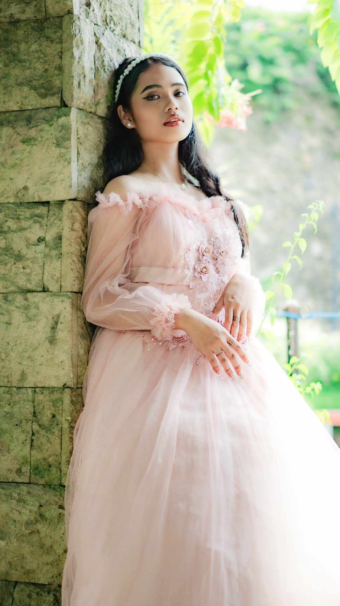

HOME
ABOUT US
STORIES
AUTHOR
About the Author🍃

unthorned_rose
Introducing Janeil Rose Curacha Formoso, the imaginative wordsmith behind the enchanting pen name "Unthorned_Rose." At a mere 18 years old, Janeil hails from the vibrant city of Cebu, Philippines, where her creativity is nurtured by the rich tapestry of culture and nature that surrounds her.
In the realm of literature, Janeil is a budding author who effortlessly weaves together the threads of fantasy, romance, sci-fi, drama, and tragedy to create narratives that transport readers to otherworldly dimensions. Her writing reflects a depth of emotion and a keen understanding of the human experience, exploring the intricate dance between love and loss, the fantastical and the mundane.
Janeil's literary universe is a captivating fusion of magical landscapes, futuristic technologies, and complex characters navigating the delicate balance between heart-wrenching drama and the allure of romance. Through her pen, she crafts tales that resonate with readers, inviting them to explore the limitless boundaries of their imagination.
As "Unthorned_Rose," Janeil has embarked on a literary journey that promises to leave an indelible mark on the world of fiction. With a unique blend of genres, she invites readers to lose themselves in the ethereal worlds she creates, where every page unfolds like a mesmerizing tapestry of emotions, making her a promising voice in the ever-evolving landscape of modern storytelling. Keep an eye out for Janeil Rose Curacha Formoso as she continues to blossom and enchant with her pen, inviting readers to experience the magic woven into each carefully crafted word.
.png)